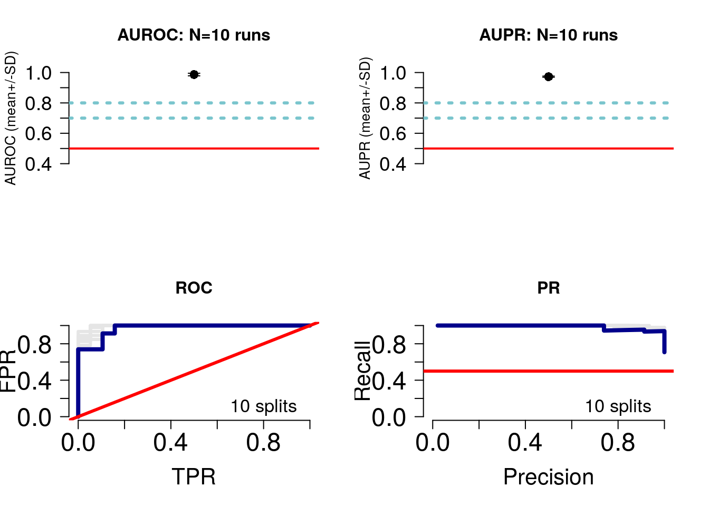
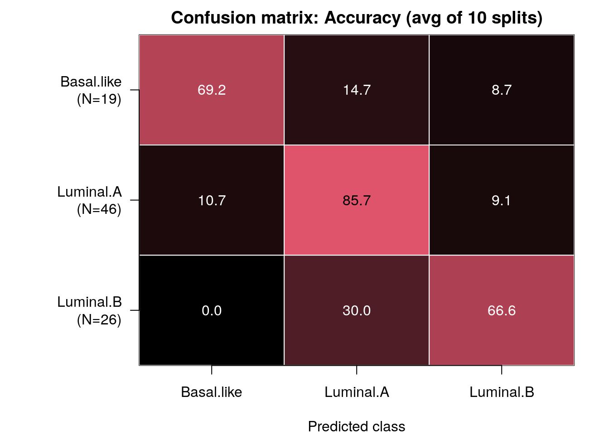

Lab 2: Pathway-level features
In this example, we will learn how to:
- Use custom similarity metrics
- Group variables into biologically-meaningful units such as pathways, for improved interpretability
Here, we will again use breast cancer samples, and discriminate between Luminal A, Luminal B and basal-like tumours. We will limit ourselves to clinical data and gene expression data but will make the following design changes:
- Clinical variables: A feature (or patient similarity network;PSN) will be defined at the level of selected variables (e.g. age); we will define similarity as normalized difference.
- Gene expression: Features will be defined at the level of pathways; i.e. each feature groups only those genes corresponding to the pathway. Similarity is defined as pairwise Pearson correlation.

Figure 1: Lab 2: Predictor design
Setup
Let’s fetch the BRCA data using curatedTCGAData again, this time only the gene expression data. Remember, the clinical data we automatically get in the colData() slot returned.
suppressMessages(library(curatedTCGAData))
brca <- suppressMessages(
curatedTCGAData(
"BRCA",c("mRNAArray"),
dry.run=FALSE)
)Let’s look at the data. Notice that we now only have one -omic assay, gene expression measures from microarrays.
brca## A MultiAssayExperiment object of 1 listed
## experiment with a user-defined name and respective class.
## Containing an ExperimentList class object of length 1:
## [1] BRCA_mRNAArray-20160128: SummarizedExperiment with 17814 rows and 590 columns
## Functionality:
## experiments() - obtain the ExperimentList instance
## colData() - the primary/phenotype DataFrame
## sampleMap() - the sample coordination DataFrame
## `$`, `[`, `[[` - extract colData columns, subset, or experiment
## *Format() - convert into a long or wide DataFrame
## assays() - convert ExperimentList to a SimpleList of matrices
## exportClass() - save all data to filesAs before, we prepare the data. I highly recommend separating the script that prepares the data from the one running the predictor for improved management, readability and debuggability.
source("prepare_data.R")
brca <- prepareDataForCBW(brca, setBinary=TRUE)## harmonizing input:
## removing 44 sampleMap rows with 'colname' not in colnames of experimentsRules to create features (patient similarity networks)
Load the netDx package and initialize the groupList object, where we will store our grouping rules.
Recall that groupList is a list-of-lists, with the top tier containing data layer names, and that the layer names must match names(assays(brca)) or whatever your MultiAssayExperiment object is called.
suppressWarnings(suppressMessages(require(netDx)))
groupList <- list()RNA: Pathway features
Let’s group genes into pathway-level features, i.e. instead of one PSN for transcriptomic data, we create one PSN for each pathway. So if you had a pathway set with 2,000 curated pathways, this would generate 2,000 input PSN.
NOTE: This design changes model-building time to several hours, so avoid large gene sets (e.g. the full set of ~44,000 Gene Ontology terms, or even ~29,000 GO Biological Process terms). A reasonable start is a compilation of pathways from all curated pathway databases, as in below. Whicever list you use can be pruned by constraining the min/max number of genes in a set, but the size is something to keep in mind.
There are two ways of providing pathway data to netDx:
1. You can download a compilation of pathways from curated databases using the fetchPathwayDefinitions() function in netDx, like so:
x <- fetchPathwayDefinitions("March",2021)## Fetching http://download.baderlab.org/EM_Genesets/March_01_2021/Human/symbol/Human_AllPathways_March_01_2021_symbol.gmtx## BFC2
## "~/.cache/netDx/20e22fee64ce_Human_AllPathways_March_01_2021_symbol.gmt"The above pathway set was downloaded from download.baderlab.org/EM_Genesets, which is a good resource for routinely-updated curated pathway definitions. Pathways are compiled from Reactome, Panther, NCI, MSigDB, etc., [REF], and data is contained in GMT format, a common format to represent gene-sets, such as pathways. You can see from the value of x that the file isn’t downloaded to our working directory, but rather is stored in a BioConductor-specific location for files (file cache), using the BiocFileCache class. This way if we rerun the script, BioConductor will only download the file again if it has changed since our last download.
Here is an example of the GMT format:

Figure 2: Lab 2: Predictor design
We then use readPathways() to read the pathways into a list format to provide the predictor with. So the full call looks like this:
pathList <- readPathways(fetchPathwayDefinitions("March",2021))## ---------------------------------------## Fetching http://download.baderlab.org/EM_Genesets/March_01_2021/Human/symbol/Human_AllPathways_March_01_2021_symbol.gmt## File: 20e22fee64ce_Human_AllPathways_March_01_2021_symbol.gmt## Warning in scan(f, what = "character", nlines = 1, quiet = TRUE, sep = "\t"):
## EOF within quoted string## Read 1123 pathways in total, internal list has 1110 entries## FILTER: sets with num genes in [10, 200]## => 341 pathways excluded
## => 769 lefthead(pathList)## $STEARATE_BIOSYNTHESIS_I__ANIMALS_
## [1] "ELOVL1" "ACOT7" "ACSL1" "ACSL5" "ELOVL6" "ACSL4" "ACSL3"
## [8] "ACOT2" "ACOT1" "ACSBG1" "ACSBG2" "SLC27A2" "ACOT4"
##
## $SUPERPATHWAY_OF_INOSITOL_PHOSPHATE_COMPOUNDS
## [1] "PI4K2B" "MTMR14" "INPPL1" "PTEN" "PIK3CD" "PIK3C2G" "PIK3CB"
## [8] "PIK3C2A" "PIK3CG" "PIK3C2B" "PIP4P2" "PIP4P1" "PLCZ1" "PPIP5K1"
## [15] "PPIP5K2" "PIP5KL1" "PLCE1" "PIP4K2A" "PIP4K2B" "PIP4K2C" "SACM1L"
## [22] "ITPK1" "IPMK" "OCRL" "ITPKB" "ITPKC" "MINPP1" "PLCB3"
## [29] "PLCB4" "PIK3CA" "ITPKA" "PIK3C3" "PLCB1" "PLCB2" "PI4K2A"
## [36] "IPPK" "MTMR3" "PIK3R4" "PIK3R3" "PIK3R2" "PIK3R1" "PIK3R6"
## [43] "PIK3R5" "INPP5B" "INPP5A" "INPP5D" "PLCG2" "INPP5J" "PIP5K1A"
## [50] "INPP5K" "PIP5K1B" "PIP5K1C" "PLCG1" "CDIPT" "IP6K1" "IP6K3"
## [57] "IP6K2" "SYNJ2" "FIG4" "PIKFYVE" "SYNJ1" "PI4KA" "PLCH1"
## [64] "PI4KB" "PLCH2" "PLCD3" "PLCD4" "PLCD1"
##
## $PUTRESCINE_DEGRADATION_III
## [1] "ALDH3A2" "ALDH3B2" "ALDH3A1" "ALDH1B1" "MAOB" "ALDH2" "MAOA"
## [8] "ALDH3B1" "SAT2" "SAT1"
##
## $TRYPTOPHAN_DEGRADATION_III__EUKARYOTIC_
## [1] "ACAT1" "HADHB" "GCDH" "TDO2" "KYNU" "HAAO" "AFMID" "KMO" "ACAA1"
## [10] "ACAT2" "ACMSD"
##
## $MEVALONATE_PATHWAY_I
## [1] "ACAT1" "IDI1" "MVK" "HMGCS1" "IDI2" "HADHB" "PMVK" "MVD"
## [9] "HMGCR" "HMGCS2" "ACAA1" "ACAT2"
##
## $`D-_I_MYO__I_-INOSITOL-5-PHOSPHATE_METABOLISM`
## [1] "PLCG1" "PLCB3" "PLCB4" "PLCH1" "PLCH2" "PLCB1" "MTMR14"
## [8] "PLCD3" "PLCB2" "PLCD4" "PLCD1" "MTMR3" "PIP4P2" "PIP4P1"
## [15] "PLCZ1" "PLCG2" "PLCE1" "PIP4K2A" "PIP4K2C"- Alternatively, you can also provide a custom pathway set to netDx by reading in a GMT file, using the
readPathways()function. In this example, I’ve downloaded a geneset of pathways often dysregulated in cancer, set C6 from MSigDB (REF):
#####TBA
###myGMTfile <- "supporting_files/c6.all.c7.4.symbols.gmt"
###file.exists(myGMTfile)
####x <- readPathways(myGMTfile)
###head(x)For this tutorial we will limit ourselves to the first set of pathways and use groupList to tell netDx to group transcriptomic data using pathways.
NOTE: The pathway definition file should use the same identifier type as your patient data. For instance, if the genes in your transcriptomic data are represented using HGNC symbols, then your pathway definition file must also use HGNC symbols (e.g. ID2S), and not a different type of identifier, such as Ensembl IDs (which look like this: ENSG00000010404).
groupList[["BRCA_mRNAArray-20160128"]] <- pathList Clinical: Single variables
Models often include clinical variables such as demographic or disease-related features such as age, sex, or treatment regimen. In this example, we take two variables from the sample metadata, and include create one PSN for each variable.
So here, we map the following:
patient.age_at_initial_pathologic_diagnosistoage(just shorter)stagetoSTAGE
These variables must be present in the colData() slot:
pheno <- colData(brca)
head(pheno[,c("patient.age_at_initial_pathologic_diagnosis","STAGE")])## DataFrame with 6 rows and 2 columns
## patient.age_at_initial_pathologic_diagnosis STAGE
## <integer> <integer>
## TCGA-A1-A0SD 59 2
## TCGA-A1-A0SE 56 1
## TCGA-A1-A0SH 39 2
## TCGA-A1-A0SJ 39 3
## TCGA-A1-A0SK 54 2
## TCGA-A1-A0SO 67 2We now add the entry into groupList. The entry for clinical is special because netDx will look for corresponding variables in the sample metadata table, colData(), rather than looking for “clinical” within assays(brca).
groupList[["clinical"]] <- list(
age="patient.age_at_initial_pathologic_diagnosis",
stage="STAGE"
)Rules to create PSNs
We now tell netDx what similarity metric to use
This is makeNets() just as we had seen in the previous exercise, which provides netDx with a custom function to generate similarity networks (i.e. features). We previously used the following code to create PSN based on Pearson correlation:
(Do not paste this in)
makePSN_NamedMatrix(..., writeProfiles=TRUE,...)`We will now make a different call to makePSN_NamedMatrix() but this time, requesting the use of the normalized difference similarity metric.
This is achieved by calling the following code (Do not paste this in, either):
makePSN_NamedMatrix(,...,
simMetric="custom", customFunc=normDiff,
writeProfiles=FALSE)normDiff is a function provided in the netDx package, but the user may define custom similarity functions in this block of code and pass those to makePSN_NamedMatrix(), using the customFunc parameters; additionally set simMetric to custom.
Other presets provided by netDx include:
sim.pearscale: Pearson correlation followed by exponential scaling; used with a vectorsim.eucscale: Euclidean disance followed by exponential scaling; used with a vectornormDiff: Normalized difference; used with a single variable such as ageavgNormDiff: Average normalized difference; used with a vector
When we’re done, this is what the makeNets function look like.
Note: I realize this may be complicated. Future versions of netDx will simplify this syntax.
makeNets <- function(dataList, groupList, netDir,...) {
netList <- c()
# make RNA nets (Pearson correlation)
rna <- "BRCA_mRNAArray-20160128"
if (!is.null(groupList[[rna]])) { ## REMEMBER TO CHECK FOR NULL
netList <- makePSN_NamedMatrix(
dataList[[rna]],
rownames(dataList[[rna]]),
groupList[[rna]],
netDir,
verbose=FALSE,
writeProfiles=TRUE, ## define Pearson similarity as before
...)
}
# make clinical nets (normalized difference)
netList2 <- c()
if (!is.null(groupList[["clinical"]])) {
netList2 <- makePSN_NamedMatrix(
dataList$clinical,
rownames(dataList$clinical),
groupList[["clinical"]],netDir,
simMetric="custom",customFunc=normDiff, ### Notice simMetric & customFunc
writeProfiles=FALSE,
sparsify=TRUE,
verbose=FALSE,
...)
}
netList <- c(unlist(netList),unlist(netList2))
return(netList)
}Build predictor
Finally! We have:
- prepared our data,
- grouped RNA by pathways (
fetchPathwayDefinitions(),readPathways()), - created two PSN using clinical variables (
groupList$clinical), and - defined our similarity metrics (
makeNets()).
Now we build our predictors. For this tutorial, we use two train/test splits. For each split, we assign features a score between zero and two, and call features with score of 1+ “feature-selected.”
Realistic parameters: When running this with your project, reasonable values are numSplits=10L (10 is a good start, just to see if you get signal, 100+ if firming up for publication), featScoreMax=10L, featSelCutoff=9L.
###t0 <- Sys.time()
###set.seed(42) # make results reproducible
###outDir <- paste(tempdir(),"pred_output",sep=getFileSep()) # use absolute path
###numSplits <- 2L
###model <- suppressMessages(
### buildPredictor(
### dataList=brca,
### groupList=groupList,
### makeNetFunc=makeNets,
### outDir=outDir,
### numSplits=numSplits,
### featScoreMax=2L,
### featSelCutoff=1L,
### numCores=4L
### )
###)
###t1 <- Sys.time()
###print(t1-t0) # time takenThe above settings were chosen to Let’s actually load data generated by reasonable parameters, e.g. numSplits=10L, featScoreMax=10L, featSelCutoff=9L, generated for this tutorial:
outFile <- sprintf("%s/CBW_Lab2_full.rda",tempdir())
lnames <- load("/home/spai/data/brca_binary_pathways.rda")
#download.file("https://github.com/RealPaiLab/CBW_CAN_DataIntegration_2021/raw/master/supporting_files/brca_pathways_full.rda",
# #destfile=outFile)
#lnames <- load(outFile)We can see the objects in the file using lnames().
Examine output
As before, we get model results, using getResults() from our helper script, helper.R. We define sel
source("helper.R")
results <- getResults(brca,model_full,
featureSelCutoff=9L,
featureSelPct=0.9)## Detected 10 splits and 2 classes## * Plotting performance## * Compiling feature scores and calling selected features
Let’s examine our confusion matrix:
confMat <- confusionMatrix(model_full)
This function returns the confusion matrix for each split, as well as the average shown in the image above:
summary(confMat)## Length Class Mode
## splitWiseConfMatrix 10 -none- list
## average 4 table numericVisualize top pathways in Cytoscape
We will now visualize top-scoring pathways using the Cytoscape visualization EnrichmentMap. Recall from the XXX module that an EnrichmentMap is a network visualization of related gene-sets, where each node is a pathway and edges connect similar pathways.
Let us say we only want to see pathways that scored in some target range for “most” of the trials; i.e. consistently high-scoring pathways.
We quantify this by asking only for features that score [EMapMinScore,EMapMaxScore] for EMapPctPass fraction of trials.
Here we ask for features scoring 7+ out of 10 for at least 70% of the train/test splits.
emap <- makeInputForEnrichmentMap (
model=model_full,
results=results,
pathwayList=pathList,
EMapMinScore=7L,
EMapMaxSore=10L,
EMapPctPass=0.7,
outDir="/home/spai/data"
)## * Creating input files for EnrichmentMap## * Writing files for network visualizationThis call will return paths to the output files, which you need to now download from AWS to your personal computer:
emap## $GMTfiles
## $GMTfiles$Luminal.A
## [1] "/home/spai/data/Luminal.A.gmt"
##
## $GMTfiles$other
## [1] "/home/spai/data/other.gmt"
##
##
## $NodeStyles
## $NodeStyles$Luminal.A
## [1] "/home/spai/data/Luminal.A_nodeAttrs.txt"
##
## $NodeStyles$other
## [1] "/home/spai/data/other_nodeAttrs.txt"Download these now by opening your web browser to: http://
Now let’s use Cytoscape to create an EnrichmentMap.
- Go to Apps > EnrichmentMap.
- In the dialog box, click “+” on the top-left.
- In the right hand panel that opens, select “Analysis type: Generic/gProfiler/Enrichr”
- Change “GMT:” to the file you just downloaded: e.g. the file for Luminal.A.
- In the bottom panel, click “Show Advanced Options.”
- Bottom panel, right: set cutoff = 0.05; metric = Jaccard.
- Click “Build.”
You should now see a network like this
INSERT NETWORK IMAGE
###plotEmap(gmtFiles[[1]],nodeAttrFiles[[1]],
### groupClusters=TRUE, hideNodeLabels=TRUE)sessionInfo
sessionInfo()## R version 4.0.5 (2021-03-31)
## Platform: x86_64-pc-linux-gnu (64-bit)
## Running under: Ubuntu 20.04.2 LTS
##
## Matrix products: default
## BLAS/LAPACK: /usr/lib/x86_64-linux-gnu/openblas-pthread/libopenblasp-r0.3.8.so
##
## locale:
## [1] LC_CTYPE=C LC_NUMERIC=C
## [3] LC_TIME=C LC_COLLATE=C
## [5] LC_MONETARY=C LC_MESSAGES=C
## [7] LC_PAPER=en_US.UTF-8 LC_NAME=C
## [9] LC_ADDRESS=C LC_TELEPHONE=C
## [11] LC_MEASUREMENT=en_US.UTF-8 LC_IDENTIFICATION=C
##
## attached base packages:
## [1] stats4 parallel stats graphics grDevices utils datasets
## [8] methods base
##
## other attached packages:
## [1] plotrix_3.8-1 ggplot2_3.3.3
## [3] Rtsne_0.15 rhdf5_2.34.0
## [5] curatedTCGAData_1.12.1 MultiAssayExperiment_1.16.0
## [7] SummarizedExperiment_1.20.0 GenomicRanges_1.42.0
## [9] GenomeInfoDb_1.26.7 IRanges_2.24.1
## [11] S4Vectors_0.28.1 MatrixGenerics_1.2.1
## [13] matrixStats_0.58.0 netDx_1.2.3
## [15] bigmemory_4.5.36 Biobase_2.50.0
## [17] BiocGenerics_0.36.1
##
## loaded via a namespace (and not attached):
## [1] utf8_1.2.1 R.utils_2.10.1
## [3] tidyselect_1.1.1 RSQLite_2.2.7
## [5] AnnotationDbi_1.52.0 grid_4.0.5
## [7] combinat_0.0-8 BiocParallel_1.24.1
## [9] RNeXML_2.4.5 munsell_0.5.0
## [11] codetools_0.2-18 withr_2.4.2
## [13] colorspace_2.0-1 highr_0.9
## [15] knitr_1.33 uuid_0.1-4
## [17] zinbwave_1.12.0 rstudioapi_0.13
## [19] SingleCellExperiment_1.12.0 ROCR_1.0-11
## [21] NMF_0.23.0 labeling_0.4.2
## [23] GenomeInfoDbData_1.2.4 bit64_4.0.5
## [25] farver_2.1.0 vctrs_0.3.8
## [27] generics_0.1.0 xfun_0.23
## [29] BiocFileCache_1.14.0 R6_2.5.0
## [31] doParallel_1.0.16 ggbeeswarm_0.6.0
## [33] netSmooth_1.10.0 rsvd_1.0.5
## [35] RJSONIO_1.3-1.4 locfit_1.5-9.4
## [37] bitops_1.0-7 rhdf5filters_1.2.1
## [39] cachem_1.0.5 DelayedArray_0.16.3
## [41] assertthat_0.2.1 promises_1.2.0.1
## [43] scales_1.1.1 beeswarm_0.3.1
## [45] gtable_0.3.0 phylobase_0.8.10
## [47] beachmat_2.6.4 rlang_0.4.11
## [49] genefilter_1.72.1 splines_4.0.5
## [51] lazyeval_0.2.2 BiocManager_1.30.15
## [53] yaml_2.2.1 reshape2_1.4.4
## [55] httpuv_1.6.1 tools_4.0.5
## [57] bookdown_0.22 gridBase_0.4-7
## [59] ellipsis_0.3.2 jquerylib_0.1.4
## [61] RColorBrewer_1.1-2 Rcpp_1.0.6
## [63] plyr_1.8.6 sparseMatrixStats_1.2.1
## [65] progress_1.2.2 zlibbioc_1.36.0
## [67] purrr_0.3.4 RCurl_1.98-1.3
## [69] prettyunits_1.1.1 viridis_0.6.1
## [71] cluster_2.1.1 tinytex_0.31
## [73] magrittr_2.0.1 data.table_1.14.0
## [75] RSpectra_0.16-0 hms_1.1.0
## [77] mime_0.10 evaluate_0.14
## [79] xtable_1.8-4 XML_3.99-0.6
## [81] jpeg_0.1-8.1 gridExtra_2.3
## [83] shape_1.4.6 compiler_4.0.5
## [85] scater_1.18.6 tibble_3.1.2
## [87] RCy3_2.10.2 crayon_1.4.1
## [89] R.oo_1.24.0 htmltools_0.5.1.1
## [91] entropy_1.3.0 later_1.2.0
## [93] tidyr_1.1.3 howmany_0.3-1
## [95] DBI_1.1.1 ExperimentHub_1.16.1
## [97] dbplyr_2.1.1 MASS_7.3-53.1
## [99] rappdirs_0.3.3 Matrix_1.3-2
## [101] ade4_1.7-16 R.methodsS3_1.8.1
## [103] igraph_1.2.6 pkgconfig_2.0.3
## [105] bigmemory.sri_0.1.3 rncl_0.8.4
## [107] registry_0.5-1 locfdr_1.1-8
## [109] scuttle_1.0.4 xml2_1.3.2
## [111] foreach_1.5.1 annotate_1.68.0
## [113] vipor_0.4.5 bslib_0.2.5.1
## [115] rngtools_1.5 pkgmaker_0.32.2
## [117] XVector_0.30.0 stringr_1.4.0
## [119] digest_0.6.27 pracma_2.3.3
## [121] graph_1.68.0 softImpute_1.4-1
## [123] rmarkdown_2.8 edgeR_3.32.1
## [125] DelayedMatrixStats_1.12.3 curl_4.3.1
## [127] kernlab_0.9-29 shiny_1.6.0
## [129] lifecycle_1.0.0 nlme_3.1-152
## [131] jsonlite_1.7.2 clusterExperiment_2.10.1
## [133] Rhdf5lib_1.12.1 BiocNeighbors_1.8.2
## [135] viridisLite_0.4.0 limma_3.46.0
## [137] fansi_0.4.2 pillar_1.6.1
## [139] lattice_0.20-41 fastmap_1.1.0
## [141] httr_1.4.2 survival_3.2-10
## [143] interactiveDisplayBase_1.28.0 glue_1.4.2
## [145] png_0.1-7 iterators_1.0.13
## [147] BiocVersion_3.12.0 glmnet_4.1-1
## [149] bit_4.0.4 stringi_1.6.2
## [151] sass_0.4.0 HDF5Array_1.18.1
## [153] blob_1.2.1 BiocSingular_1.6.0
## [155] AnnotationHub_2.22.1 memoise_2.0.0
## [157] dplyr_1.0.6 irlba_2.3.3
## [159] ape_5.5